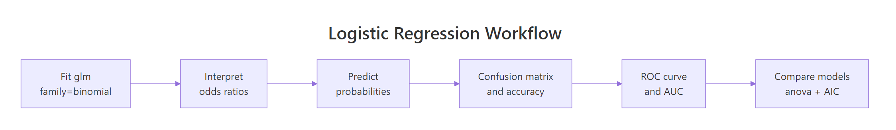

Logistic Regression Exercises in R: 10 Classification Practice Problems, Solved Step-by-Step
These 10 logistic regression exercises in R walk you through fitting a glm(family = binomial) model, interpreting log-odds as odds ratios, predicting probabilities, building confusion matrices, drawing ROC curves, computing AUC, and comparing nested classifiers. Every problem ships with a runnable scaffold, a hint, and a collapsible solution so you can self-check the instant you finish coding.
How do you fit a logistic regression with glm()?
One line of R fits a logistic regression: pass y ~ x1 + x2 + ... to glm() with family = binomial. The coefficients it returns live on the log-odds scale, and a z-test next to each one tells you whether that predictor beats noise. We fit a transmission-type classifier on mtcars right now, then Problem 1 asks you to refit with a different predictor.
The wt slope is −8.08, so heavier cars are much less likely to be manual after you hold horsepower constant. The hp slope is +0.036, so between two cars of the same weight, the one with more horsepower tilts toward manual. Both z-values sit above 2 in absolute value and both p-values clear 0.05, which means each predictor carries real signal. The deviance drops from 43.23 (intercept-only null model) to 10.06 with two predictors, a huge reduction that says the fit is strong.
predict(fit, type = "response"). To talk about multiplicative odds changes, exponentiate (next section).Problem 1: Refit with a single predictor
Try it: Fit a simpler model ex1_fit that predicts am from wt only, then check whether the wt slope is still negative and its p-value is still below 0.05.
Click to reveal solution
Explanation: Without horsepower in the model, the weight slope shrinks in magnitude (−4.02 instead of −8.08) but stays clearly negative with p = 0.005. A partial slope depends on which other predictors are in the model, dropping hp changes what wt is holding constant.
How do you interpret coefficients as odds ratios?
Log-odds are hard to read aloud. A slope of −8.08 means nothing to a stakeholder. The standard fix is to exponentiate, which turns the log-odds change into a multiplicative change in the odds itself. An odds ratio of 2 means the odds of the outcome double per 1-unit increase in the predictor, a ratio of 0.5 means the odds halve. We compute both the point estimates and their 95% confidence intervals in one exp() call, then Problem 2 asks you to pull one OR.
The odds ratio for wt is 0.00031, meaning the odds of being manual shrink by a factor of roughly 3,000 for each extra 1,000 lb of weight, holding horsepower constant. That number is extreme because a 1,000-lb jump is enormous relative to the mtcars spread (roughly 1.5 to 5.4). The odds ratio for hp is 1.037, so each extra horsepower multiplies the odds of being manual by about 1.037, a gentle 3.7% bump. The CI on hp is [1.008, 1.087], entirely above 1, so the effect is significantly positive at α = 0.05.
The formula connecting a slope on the log-odds scale to an odds ratio is a direct application of the exponential:
$$\text{OR} = e^{\beta}$$
Where:
- $\beta$ = the logistic regression coefficient (log-odds change per 1-unit predictor increase)
- $\text{OR}$ = the multiplicative factor applied to the odds per 1-unit predictor increase
exp(coef()) you have a number with no uncertainty attached. Wrapping confint() in exp() gives you the honest range of plausible odds ratios, and whether that range crosses 1 is the direct visual test for statistical significance at your chosen α.Problem 2: Compute one odds ratio
Try it: Using fit1, compute the odds ratio for hp as a single number and store it in ex2_or_hp. The grader checks it is within 0.01 of the true value.
Click to reveal solution
Explanation: coef(fit1)["hp"] grabs the hp slope on the log-odds scale, and exp() maps it to the odds scale. The value 1.037 reads as "per extra horsepower, the odds of being manual rise by roughly 3.7%, holding weight constant."
How do you predict probabilities and build a confusion matrix?
Once the model is fit, the two most common follow-up tasks are turning predictors into predicted probabilities and turning those probabilities into predicted classes via a threshold. The default predict() call on a glm object returns log-odds, which is rarely what you want, add type = "response" to get probabilities on the 0-to-1 scale. From there, a threshold (0.5 is the starting point) produces hard class labels, and a 2×2 table() of predictions versus actuals is the confusion matrix. Problem 3 drills the prediction step.
Accuracy is 0.969, meaning 31 of 32 cars are classified correctly on the training data. The single error is an actual-manual car predicted as automatic. At this scale the model looks near-perfect, but treat that number with caution: 32 rows is tiny, and evaluating on the same data you trained on is guaranteed to be optimistic. A real workflow holds out a test set or cross-validates before trusting accuracy.
type = "response" silently returns log-odds, not probabilities. The default predict.glm() returns values on the link scale (log-odds), which can be any real number including negatives. If you then threshold at 0.5, every value below 0 gets class 0 and most positive values get class 1, and you get a confusion matrix that looks plausible but is wrong. Always write out type = "response" when you want probabilities.Problem 3: Predict probability for a new car
Try it: Predict the probability of being manual for a single new car with wt = 2.5 and hp = 120. Store the number in ex3_prob and confirm it is between 0 and 1.
Click to reveal solution
Explanation: A 2,500-lb, 120-hp car is light and fairly powerful, both features that tilt toward manual in this model, so 0.99 is exactly what we expect. newdata must contain every predictor used at fit time, using the same column names.
How do you evaluate the classifier with ROC curves and AUC?
Accuracy at a fixed threshold hides how the model behaves across all thresholds. The ROC curve fixes that: it plots sensitivity (true positive rate) against 1 − specificity (false positive rate) as the threshold sweeps from 0 to 1. The AUC (area under the ROC curve) compresses the whole curve into one number between 0.5 (coin flip) and 1 (perfect ranking). We build both with the pROC package in three lines, then Problem 4 asks you to extract the AUC as a plain number.
AUC of 0.996 means the model ranks a randomly chosen manual above a randomly chosen automatic 99.6% of the time. That is near-perfect, consistent with the 0.97 accuracy we already saw. The curve itself hugs the top-left corner, the canonical shape of a strong classifier. The diagonal 45° line would be pure randomness.
Problem 4: Extract AUC as a plain number
Try it: Pull the AUC out of roc_obj as a numeric scalar (not the auc object pROC returns by default) and store it in ex4_auc. The grader checks it is above 0.99.
Click to reveal solution
Explanation: auc(roc_obj) returns a special auc object with printing dressing around it; as.numeric() strips that and gives you a plain number you can compare, log, or export. If you skip the cast, ggplot or a spreadsheet writer may choke on the custom class.
How do you compare models and check overall fit?
Two questions pop up whenever you have more than one candidate model: does adding these predictors really help? (answered with a nested likelihood-ratio test) and how much of the total variability does any one model explain? (answered with a pseudo-R²). anova(small, big, test = "Chisq") runs the likelihood-ratio test, and McFadden's pseudo-R² is a two-line hand calculation from the deviance values in summary(). Problem 5 asks you to compute McFadden from scratch.
The likelihood-ratio test reports a deviance drop of just 0.22 with 1 extra parameter and p = 0.64, nowhere near significance. Adding cylinders does not help, stick with the smaller model. McFadden's pseudo-R² of 0.77 for fit1 says the model explains about 77% of the null deviance, a strong value, but pseudo-R² values from different samples or model families should not be compared directly, unlike a linear regression R².
Problem 5: McFadden pseudo-R² by hand
Try it: Compute McFadden's pseudo-R² for fit1 from scratch using the formula $1 - \text{resid.dev} / \text{null.dev}$. Store the result in ex5_r2 and confirm it matches the teaching-block number to 3 decimals.
Click to reveal solution
Explanation: fit1$deviance is the residual deviance, fit1$null.deviance is the deviance of an intercept-only model. Their ratio is the share of variability the model did not explain; 1 minus that ratio is McFadden's pseudo-R². The calculation is always a two-line job on a fitted glm object.
Practice Exercises
Five capstone problems, ordered roughly easier → harder. Each uses a distinct ex<N>_ prefix so your exercise code never clobbers fit1, probs, roc_obj, or the other teaching variables.
Problem 6: Extract a specific coefficient by name
Pull the wt slope out of fit1 as a single number and save it to ex6_wt. The grader checks that you got the exact value from summary().
Click to reveal solution
Explanation: coef() returns a named numeric vector of all coefficients. Indexing by "wt" pulls exactly the one you want without caring about its position. That pattern generalises to every fitted model: coef(model)["name"] is the shortest path to one slope.
Problem 7: Build a 95% confidence interval for an odds ratio
Produce a two-element named vector ex7_ci with the 2.5% and 97.5% exponentiated limits for the hp odds ratio. Use confint(), then exp().
Click to reveal solution
Explanation: confint(fit1) returns a matrix with one row per coefficient and two columns (2.5%, 97.5%). Indexing "hp", ] pulls the row for hp, and wrapping the whole matrix in exp() puts both limits on the odds scale. Both endpoints sit above 1, so the positive hp effect is significant at α = 0.05.
Problem 8: Confusion matrix at a stricter threshold
Using probs from the teaching block, build a confusion matrix ex8_cm at a stricter threshold of 0.7 (only classify as manual when the model is very confident), then compute the accuracy ex8_acc.
Click to reveal solution
Explanation: Raising the threshold from 0.5 to 0.7 is more conservative about calling a car manual. One extra manual whose probability sat between 0.5 and 0.7 now gets classified as automatic, so recall for the manual class drops and overall accuracy falls from 0.969 to 0.906. Tuning the threshold is always a trade-off between false positives and false negatives, which is what the ROC curve visualises.
Problem 9: Youden-optimal threshold
Use pROC::coords(roc_obj, x = "best", ret = "threshold", best.method = "youden") to find the threshold that maximises Youden's J (sensitivity + specificity − 1). Save the threshold in ex9_best.
Click to reveal solution
Explanation: coords(..., x = "best") scans every possible threshold and returns the one that maximises Youden's J by default. In this tiny, well-separated dataset the optimum sits close to 0.5, so the default cut-off is already almost perfect. On noisier data the optimum often lands far from 0.5, which is why you should always check rather than assume.
Problem 10: Nested likelihood-ratio test for a new predictor
Fit ex10_biggest <- glm(am ~ wt + hp + cyl + disp, binomial) and compare it against fit_big with anova(..., test = "Chisq"). Save the ANOVA object in ex10_anova and decide at α = 0.05 whether disp adds anything.
Click to reveal solution
Explanation: The deviance barely moves (9.84 → 9.84) and p ≈ 0.99. Once weight, horsepower, and cylinders are in the model, engine displacement is redundant, a classic sign that disp is already represented through the other predictors (big-displacement engines tend to have more hp and more weight).
Complete Example: end-to-end workflow on a new dataset
Here is the whole pipeline chained on the built-in infert dataset, a case-control study of infertility after spontaneous and induced abortions. We fit a model, read one odds ratio, predict probabilities, threshold them, build a confusion matrix, compute AUC, and compare against a smaller rival, all in one continuous block.

Figure 1: The six-stage logistic classification workflow rehearsed by these 10 problems.
The odds ratio for spontaneous is 3.14, meaning each additional spontaneous abortion triples the odds of being an infertility case, a very large effect that survives adjustment for age and parity. Overall accuracy at threshold 0.5 is (137 + 41) / 248 ≈ 71.8%, and AUC is 0.73, a respectable but not exceptional classifier, consistent with the known difficulty of predicting infertility from a handful of reproductive-history variables. The nested LR test p-value of 4.9e-09 confirms that adding parity and spontaneous to an age-only model is a highly significant improvement.
Summary
| # | Problem | Concept tested | R function |
|---|---|---|---|
| 1 | Refit with a single predictor | glm() basic call |
glm(y ~ x, family = binomial) |
| 2 | Compute one odds ratio | Exponentiate a slope | exp(coef()) |
| 3 | Probability for a new row | type = "response" |
predict(..., newdata, type = "response") |
| 4 | Extract AUC as a number | Cast special object | as.numeric(auc()) |
| 5 | McFadden's pseudo-R² | Deviance arithmetic | 1 - deviance / null.deviance |
| 6 | Extract a coefficient by name | Named-vector indexing | coef()["name"] |
| 7 | 95% CI for an odds ratio | Exponentiated CI | exp(confint()) |
| 8 | Confusion matrix at custom cut-off | Thresholding + cross-tab | ifelse() + table() |
| 9 | Youden-optimal threshold | ROC coordinate search | pROC::coords(x = "best") |
| 10 | Likelihood-ratio test | Nested model comparison | anova(..., test = "Chisq") |
References
- James, G., Witten, D., Hastie, T., Tibshirani, R., An Introduction to Statistical Learning, 2nd edition, Chapter 4: Classification. Link
- Hosmer, D. W., Lemeshow, S., Sturdivant, R. X., Applied Logistic Regression, 3rd edition. Wiley (2013).
- R Core Team,
stats::glmreference manual. Link - Robin, X. et al., pROC package documentation. Link
- Harrell, F. E., Regression Modeling Strategies, 2nd edition, Chapter 10: Binary Logistic Regression. Springer (2015).
- Faraway, J. J., Extending the Linear Model with R, 2nd edition, Chapter 2: Binomial Data. CRC Press (2016).
- Long, J. S., Regression Models for Categorical and Limited Dependent Variables, Chapter 3: Binary Outcomes. Sage (1997).
Continue Learning
- Logistic Regression in R, the parent tutorial that introduces every concept these 10 problems rehearse.
- Multiple Regression Exercises in R, the linear-outcome sibling that trains the same diagnostic muscles on continuous targets.
- Logistic Regression With R, a worked case study on a real dataset that complements the
mtcarswalk-throughs above.